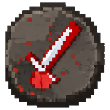
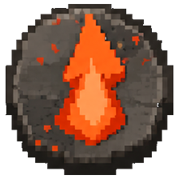
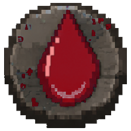
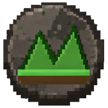
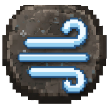
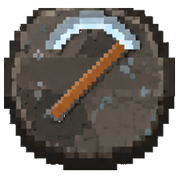
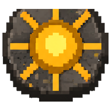

- • New stones: the Undead Stone and Alchemist Stone, plus three starter stones (Farmer, Spider, Fish) that new players pick from a menu the first time they join.
- • Every stone got a balance pass, new always-on passives, and a new animation while its ability runs.
- • Buffs work differently: speed, strength, regeneration and more are no longer potion effects, so milk can't clear them.
- •
Shift + right-click no longer activates a stone. Use your stone key (
/stone trigger) or/stone use. - •
Fixes: the Escaper's teleport works again, the Water Stone no longer leaves you stuck, and the Air Stone now shows up in
/stone recipe. - • Latest patch: damage buffs are smaller on Melee, Water, Dragon and the Alchemist Stone; the Dragon Stone's breath zone is gone; the Shadow Stone is now untouchable while active; the Undead Stone's drowned is now a husk with a Sharpness III sword; starter stones got reworked numbers; and 11 stones have new crafting recipes.
Overview
Highlights
New
New Stones
Event Stones
💀 Undead Stone
- •Always on: hostile monsters don't attack you unless you hurt them first. The Ender Dragon and the Warden still attack.
- •Ability (85s cooldown): summons 2 zombies, 1 stray and 1 husk that rise out of the ground in a triangle around you. The stray and the husk wear full Protection IV diamond armor — the stray carries a Power V bow, the husk a Sharpness III diamond sword.
- •They only attack players who aren't trusted, never you or your trusted friends, drop nothing when killed, can be killed by enemies, and disappear after 15 seconds.
🧪 Alchemist Stone
- •Always on: positive potion effects you receive last 50% longer (speed, strength, invisibility, fire resistance and more).
- •Ability (90s cooldown): for 7 seconds you deal 5% more damage for each potion effect you have, up to +15% (three effects reaches the cap). Potion-coloured particles surge out of you.
Unlike the Sunstone, Moonstone and Dragon Stone, the Undead and Alchemist Stones can be crafted like any other stone.
Starter Stones
New players get a menu on their first login and pick one of the three below. They have no ability, only passives, can't be crafted, and an equipped starter stone is never lost when you die. The old "random stone when you first join" is gone, replaced by this menu.
🌾 Farmer Stone
Starter- •+7% damage while holding a hoe in your off hand (replaces the saturation bonus).
- •+10% speed on dirt, grass, coarse dirt, podzol, rooted dirt, mud, farmland, dirt paths, moss and mycelium.
🕷️ Spider Stone
Starter- •Cobwebs slow you 15% less.
- •You take 20% less fall damage.
🐟 Fish Stone
Starter- •You swim 20% faster.
- •+3% damage while standing in water.
Numbers
Balance Changes
These changed on every server. They're applied once — even if the server owner had changed them before — and after that you can set your own values again.
| Stone | What changed |
|---|---|
| Plant | Lasts 9s (was 15), healing is 0.4 health per second, 1 heart every 5s (was 0.8, 1 heart every 2.5s), leaves reach 18 blocks (was 24) |
 Lightning
Lightning
|
Cooldown 65s (was 70), critical hit damage 1.7 (was 1.6) |
|
 Melee |
Lasts 8s. Instead of Strength II (+6 damage on each hit), everything you hit does 30% more damage |
 Water
Water
|
Wave lasts 3.5s (was 5). The wave is now normal damage (armor reduces it). After the wave you do 15% more damage for 4s instead of Strength II (+6 damage on each hit) |
|
 Fire |
Cooldown 60s (was 55), explosion 4.5 hearts (was 4), radius 4 blocks (was 4.5) |
|
 Blood |
Cooldown 60s (was 65), lasts 7.5s (was 10), +20% speed (was Speed II, +40%), +10% damage for 6.5s (was Strength II, +6 damage on each hit), heals up to 5 hearts per use (was 4) |
 Moonstone
Moonstone
|
Cooldown 60s (was 70), lasts 8s, range 24 blocks (was 32), a hit every 0.45s |
| Shadow | Lasts 7s (was 10) and now gives full invisibility: mobs lose track of you too |
|
 Earth |
Lasts 7s (was 15), dome is 8 blocks across (was 11) with small holes in the roof. The 40% damage reduction is replaced by +15% speed for 10s |
| Speed | Cooldown 27.5s (was 35) |
| Health | Lasts 8s, 10 absorbing hearts instead of +6 hearts of extra max health (Health Boost III), 40% less damage taken for 5s (was 10s), always-on bonus is +4 max health (was +5) |
 Wealth
Wealth
|
Only 3 charged emeralds (was 64) |
|
 Air |
The burst does 1 heart of normal damage (was 3 hearts), +20% speed for 5s (was Speed II, +40%) |
 Escaper
Escaper
|
Freeze lasts 3s (was 2.75). The teleport works again |
| Mischief | Lasts 8s (was 15). Darkness replaces Blindness |
|
 Miner |
Cooldown 40s (was 50). The ability also gives +75% mining speed |
|
 Sunstone |
Lasts 6s (was 7), always-on speed is +10% (was +20%). 60% less damage taken for 6s. Poison is replaced by a 10-block burning zone that moves with you: 1.5 hearts every 1.25s and enemies are set on fire |
 Dragon
Dragon
|
One fireball every 2s (was 3), 2.5 hearts per fireball (was 3), 2 block impact radius (was 3) |
Latest Patch
A follow-up pass that trims some of the numbers above and removes the Dragon Stone's breath zone.
| Stone | What changed |
|---|---|
| 🧪 Alchemist | The damage bonus from your potion effects now stops at +15% (was +25%). Still 5% per effect, so three effects reach the cap |
|
Dragon
|
Always-on damage bonus is +5% (was +10%). No more breath zone — the ability is only the 3 dragon fireballs |
| Melee | The ability now gives +20% damage for 8s (was +30%) |
|
Water
|
After the wave you do +5% damage for 4s (was +15%) |
| Speed | The ability gives +25% speed (was +60%) |
|
Escaper
|
Enemies are frozen for 2 seconds (was 3) |
| Shadow | While the ability is active, nothing can hit you (players, mobs, arrows, explosions). Fall damage, fire and the like still hurt. Your armor no longer shows, because you're completely hidden from other players |
| 💀 Undead | The drowned is replaced by a husk in full Protection IV diamond armor carrying a Sharpness III diamond sword. The stray's bow is now Power V. Still 2 zombies, 1 stray and 1 husk, still gone after 15 seconds |
Starter Stones, Rebalanced
| Stone | Before | Now |
|---|---|---|
| 🌾 Farmer | +15% saturation from food, +5% speed on dirt | +7% damage while holding a hoe in your off hand, +10% speed on dirt (the saturation bonus is gone) |
| 🕷️ Spider | Cobwebs slow you 10% less, 7.5% less fall damage | Cobwebs slow you 15% less, 20% less fall damage |
| 🐟 Fish | +10% swim speed, +3% damage in water | +20% swim speed, +3% damage in water (unchanged) |
New Always-On Passives
| Stone | Passive |
|---|---|
| Plant | Sneak speed doubled |
| Lightning | +3% attack speed |
| Melee | +1 armor toughness |
| Water | Less slowdown in water |
| Fire | Immune to fire and lava (milk can't remove it) |
| Shadow | Less slowdown from soul sand and cobwebs |
| Earth | +7% knockback resistance |
| Speed | +10% movement speed |
| Escaper | Reach 3.2 blocks (was 3) |
| Mischief | Block reach 5.5 blocks (was 4.5) |
| Air | Moves more easily through the air |
| Dragon | +10% damage |
New: Ability Animations
Every stone now plays a visual effect while its ability runs: moss and sculk floors, an obsidian dome with flying blocks, a water bubble, orbiting netherrack and emerald blocks, harmless lightning, a floating sun and dragon, puppets above you, and more.
Server owners can switch all animations off with one setting.
Under the hood
Buffs Are No Longer Potion Effects
Speed, strength, damage boosts, resistance, regeneration, mining speed and extra hearts are now built into the stones as percentages and plain numbers, instead of potion levels. That means milk can't clear them and they never wipe a potion you already had. They show no potion icon: the action bar now shows Active (5s) with the time left.
| The old potion level | What it is now |
|---|---|
| Speed II / Speed III | +40% / +60% movement speed |
| Strength I / Strength II | +3 / +6 damage on each hit (Melee, Water and Blood now use a damage multiplier such as x1.3 instead) |
| Resistance II / Resistance III | 40% / 60% less damage taken |
| Regeneration I / II / III | 0.4 / 0.8 / 1.67 health per second |
| Haste I | +20% mining speed |
| Health Boost III | +12 max health (the Health Stone now gives 10 absorption hearts instead) |
When the same kind of buff stacks (for example Dragon's x1.1 damage with Melee's x1.3), the extra from stacking is reduced by 35%, so x1.3 and x1.1 give x1.3845, not x1.43. Resistance, regeneration and mining speed don't stack: only the strongest applies.
Crafting
Crafting
- •Any variation of a recipe potion works now: long, strong (level II), splash and lingering.
- •The Air Stone now appears in
/stone recipe.
The Undead and Alchemist Stones can now be crafted like any other stone.
New Recipes
11 stones got new recipes. All recipes are 3x3 — potions can be any variation (regular, splash, lingering, long, strong). Changed ingredients are in bold.
| Stone | Top row | Middle row | Bottom row |
|---|---|---|---|
| 💧 Water | Nautilus Shell, Water Breathing potion, Nautilus Shell | Water Breathing potion, Trident, Water Breathing potion | Heart of the Sea, Water Breathing potion, Heart of the Sea |
| ⚔️ Melee | Netherite Ingot, Strength potion, Netherite Ingot | Netherite Sword, Beacon, Netherite Sword | Netherite Ingot, Strength potion, Netherite Ingot |
| 🪨 Earth | Grass Block x3 | Obsidian, Netherite Ingot (was a Netherite Block), Obsidian | Grass Block, Rooted Dirt, Grass Block |
| 💨 Speed | Heart of the Sea, Rabbit's Foot, Heart of the Sea | Swiftness potion, Zombie Head, Swiftness potion | Heart of the Sea, Rabbit's Foot, Heart of the Sea |
| 🌑 Shadow | Sculk Shrieker, Enchanted Golden Apple, Sculk Shrieker | Wither Skeleton Skull, Skeleton Skull, Wither Skeleton Skull | Sculk Shrieker, Enchanted Golden Apple, Sculk Shrieker |
| 🌀 Escaper | Eye of Ender, Wither Skeleton Skull, Enchanted Golden Apple | Wither Skeleton Skull, Netherite Spear, Wither Skeleton Skull | Enchanted Golden Apple, Wither Skeleton Skull, Eye of Ender |
| 🩸 Blood | Diamond Sword, Rotten Flesh, Totem of Undying | Spider Eye, Netherite Axe, Spider Eye | Totem of Undying, Rotten Flesh, Diamond Sword |
| 💰 Wealth | Emerald Block, Gold Block, Emerald Block | Gold Block, Diamond Block (was a Nether Star), Gold Block | Emerald Block, Gold Block, Emerald Block |
| 🌬️ Air | Breeze Rod, Enchanted Golden Apple (was a Golden Apple), Breeze Rod | Wind Charged potion, Netherite Spear, Wind Charged potion | Breeze Rod, Golden Apple, Breeze Rod |
| 💀 Undead (event) | Wither Skeleton Skull, Rotten Flesh, Wither Skeleton Skull | Bone, Wither Skeleton Skull, Bone | Wither Skeleton Skull, Rotten Flesh, Wither Skeleton Skull |
| 🧪 Alchemist (event) | Swiftness potion, Diamond Block, Strength potion | Diamond Block, Enchanted Golden Apple, Diamond Block | Weaving potion, Diamond Block, Healing potion |
The Undead and Alchemist Stones are event stones, so they can only be crafted once staff run /stone craft enable undead or
/stone craft enable alchemist.
/stone recipe shows every
recipe above.
Cleanup
Fixes
- •Escaper Stone: the teleport did nothing unless you were looking exactly level. It now works whichever way you look.
- •Water Stone: the wave no longer leaves you stuck against a wall or the floor.
- •Shift + right-click no longer activates a stone. Stone items also no longer say "Shift + Right Click to activate".
New Look
The Undead Stone (a glowing-eyed skull) and the Alchemist Stone (a bubbling potion flask) are getting new item and action-bar icons, in the same style as the other stones — artwork is on the way, so this page uses placeholder icons for now. The Farmer, Spider and Fish starter stones also use placeholder icons until their final art is ready.
🛠️ Admin / Staff Commands
Staff OnlyOnly server operators can use these.
New in This Update
| Command | What it does |
|---|---|
/stone craft enable
<stone|all> |
Allows a stone (or every stone that has a recipe) to be crafted. Enabling an event stone that has a recipe (Undead, Alchemist) makes it craftable. Stones with no recipe can't be enabled and a warning is shown. |
/stone craft disable
<stone|all> |
Stops a stone (or all of them) from being crafted, for example while you run trials. Saved across restarts. |
/stone trial
<random|stone> |
Starts a stone trial at your position for a specific stone, or a random one. Works for event stones. Uses no ingredients and does not count toward the 2-crafts-per-stone limit. |
Also new for staff: OPs in Creative mode skip the 60-second unequip/re-equip wait. In Survival the wait still applies.
All Other Staff Commands
| Command | What it does |
|---|---|
/stone give <player>
<stone> [amount] |
Give a stone to a player |
/stone giveall <stone>
[amount] |
Give a stone to everyone online |
/stone random
<player> |
Give a player a random stone |
/stone remove <player>
<stone|all> |
Remove a stone from a player |
/stone clear
<player> |
Remove every stone from a player |
/stone cooldown <player>
<stone|all> reset |
Reset a player's cooldowns |
/stone reload |
Reload stone-settings.yml without a restart |
/stone debug item |
Show debug info for the item in your hand |
/stone debug player
<player> |
Show debug info for a player |
For Server Owners
- •The new balance numbers are
applied once on the first start, and your previous file is saved as
stone-settings.yml.pre-override.bak. After that you can change any value and it won't be overwritten. New settings are added automatically. - •
general.animations-enabledturns all animations off, andgeneral.buff-stacking-penalty-percentsets the stacking penalty (35). - •Old potion-style settings (for
example
speed-amplifier) are converted to the new settings automatically, keeping your own values. - •Recipe changes (potion
variations,
/stone craft) need a server restart, not/stone reload. - •Latest
patch (no new commands): the same forced-once treatment applies to
stones.alchemist.max-damage-percent(15),stones.dragon.passive-damage-multiplier(1.05),stones.melee.damage-multiplier(1.2),stones.water.damage-multiplier(1.05),stones.speed.speed-percent(25),stones.escaper.trap-duration-millis(2000),stones.fish.water-speed-percent(20),stones.farmer.dirt-speed-percent(10),stones.spider.web-slowdown-reduction-percent(15) andstones.spider.fall-damage-reduction-percent(20). - •New settings added
automatically:
stones.undead.husk-count,stones.undead.stray-bow-power,stones.undead.husk-sword-sharpness,stones.farmer.hoe-damage-percent(7) andstones.shadow.untouchable(true).stones.dragon.zone-*,stones.farmer.saturation-bonus-percentandstones.undead.drowned-countno longer do anything and can be deleted. The 11 new recipes also need a restart, not/stone reload.